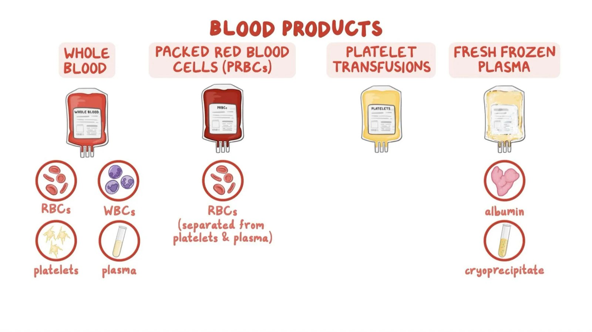
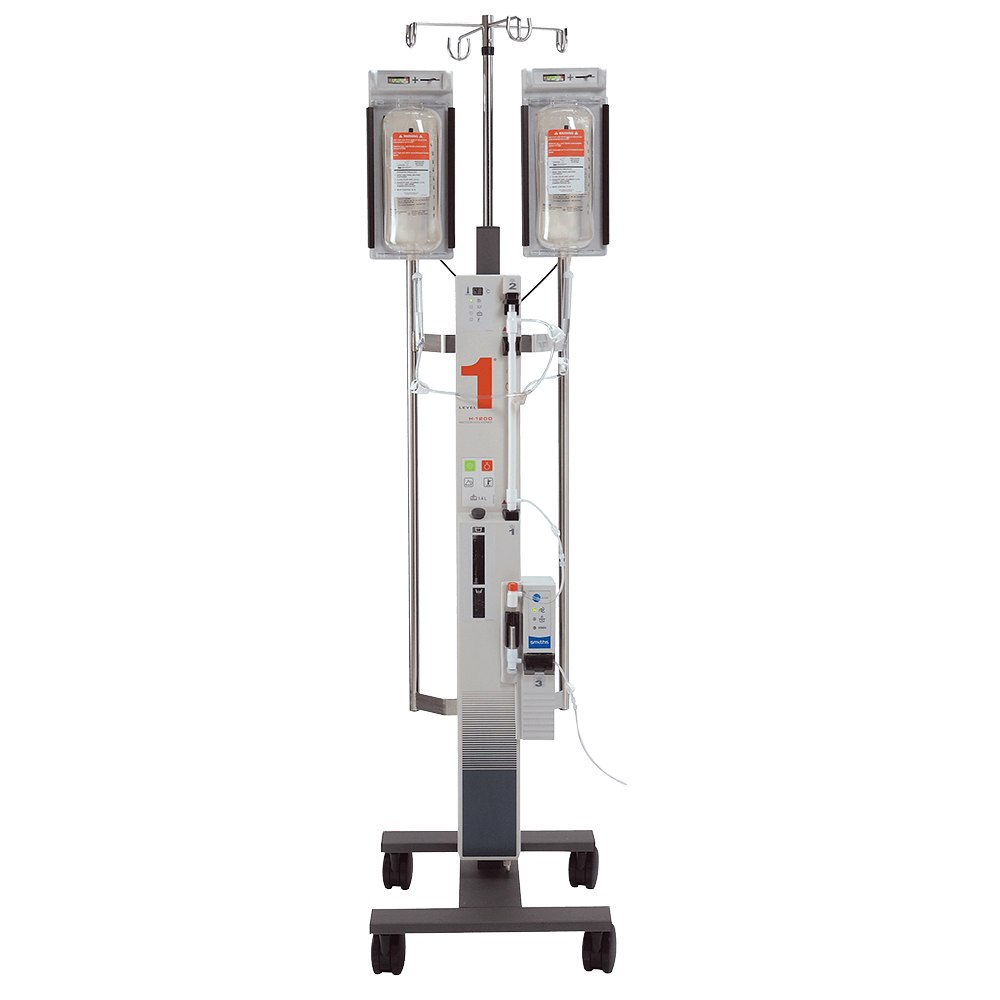
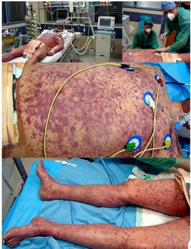

Day 1 · Topic 3
Hematologic Issues in Critical Care
Things to Bring Forward
Earlier Content This Topic Builds On
- Blood components: how to interpret an H&H and what a CBC shows, as general principles.
- Coagulation and medications: for a patient on anticoagulation such as a heparin drip, the nurse's responsibilities, the labs to draw, and the signs and symptoms of an adverse reaction.
- Transfusions and blood products: the nurse's responsibility in transfusing, what to look for and how to do it, and the different blood products.
- Blood transfusion reactions: what to look for, and telling a reaction that needs little from one that is a full stop.
- Anemia signs and symptoms: recognizing them and pointing them out.
- Bleeding precautions: what a patient on them needs.
Anemia
Why Anemia Is a Big Deal
- Low hemoglobin or decreased RBCs. RBCs (erythrocytes) carry oxygen on their hemoglobin.
- Either the RBCs are lacking, after a large loss of blood volume, or the hemoglobin is.
- Not enough oxygen circulates to feed the tissues, which survive on aerobic metabolism.
General Signs and Symptoms of All Types of Anemia
| Response | What Is Happening | Signs and Symptoms |
|---|---|---|
| Tissue hypoxia |
| Fatigue, SOB, angina, intermittent claudication, muscle cramps, headache, lightheadedness, syncope, abdominal cramping, nausea. |
| Selective increase in tissue perfusion |
| Pale skin and pale mucous membranes, cool to touch. Loss of urine output. Nausea, lack of appetite. |
| Increased cardiac output |
| Increased HR, BP and SV. Angina. Severe, down the road: high-output cardiac failure, cardiomegaly. |
| Increased pulmonary function |
| Tachypnea. SOB, exertional or at rest. |
| Increased RBC function |
| Stress reticulocytosis: an increased reticulocyte count. |
Timing
Sudden Loss
- All of the symptoms, very quickly: short of breath immediately, headache, lightheadedness, altered level of consciousness.
- Compensatory responses have not had time to kick in.
- Example: trauma with liters of blood lost.
Slow Loss
- May be sitting up and talking with the same H&H as the trauma patient, even a hemoglobin of 4 and a hematocrit of 12.
- The body has had time to compensate.
- Example: a slow GI bleed.
Mechanisms of Anemia
| Mechanism | Examples |
|---|---|
| RBC production | Chronic kidney disease. Radiation that has irradiated the bone marrow. |
| RBC destruction | Hemolytic anemia: an autoimmune problem, or the wrong blood transfusion. |
| Blood loss | The most common: post-op, trauma, GI bleed. |
The signs and symptoms are essentially the same whatever the mechanism.
![Flow chart. An anemia triggering event leads to decreased RBC and hemoglobin, then decreased oxygen carrying capacity, then tissue hypoxia. Mechanisms: RBC production, RBC destruction, blood loss. Major manifestations: neuro (vertigo, irritability, inability to concentrate), GI (anorexia), skin (pale skin and mucous membranes), general (activity and temperature intolerance). Compensatory responses: heart (increased BP, HR, SV and oxygen demand on the heart, angina possible), lungs (increased respiratory rate, depth and work of breathing, dyspnea, orthopnea), kidneys (increased RAAS activity and erythropoietin secretion, stimulation of bone marrow, bone marrow discomfort).](images/day1-hematologic/anemia-flow-chart.jpg)
The Bleeding Patient
Identify the source and treat the cause.
| Source | Treating the Cause |
|---|---|
| Chronic GI bleed | Surgery to clip the bleed. Or, on a blood thinner, reverse it and give product. |
| Trauma | The OR, to clamp and sew off the bleeding. |
| Chronic kidney disease | Erythropoietin supplementation. |
| Bone marrow not working | Medications to replace what is lost. A change to the radiation, or bone marrow replacement. |
Coagulopathies
- Abnormalities in one of the stages of clotting: the clotting cascade is altered.
- Bleeding patients often develop one, and very quickly when actively bleeding, even on no anticoagulation. Seen in surgery and trauma.
- Temperature plays a big role in clotting, which is why it is regulated in trauma and surgery.
- Examine the bleeding times and coags of every bleeding patient.
- No known reason for the bleeding: think of an inherited coagulopathy (hemophilia, von Willebrand syndrome) or an acquired one (a medication, chemo).
- Corrected with vitamin K or a factor VII drug, usually as a one-time dose. Given quite a bit in trauma and post-op recovery.
Medications and the Bleeding Patient
- Always know what medications the patient is on.
- Bright red blood in the sputum from an ET tube, on a heparin drip: does the drip need to stop?
- GI bleed with a history of atrial fibrillation: is the patient on warfarin or apixaban?
- Known to be bleeding after surgery, with an enoxaparin order: question it. It is sometimes still given, because the risk of DVT is so high.
Why it matters: active bleeding can lead to hypovolemic shock, which is low blood volume shock.
What Can Affect Coagulation
| Factor | How It Affects Coagulation |
|---|---|
| Alcohol, poisons, substances | All can affect bleeding times and coagulation. High levels of ethanol make the blood thinner. |
| Blood clots (clotting disorders) | A history of blood clots is a huge risk for more, and a reason to worry about a clotting disorder. |
| Liver disease | The liver makes a lot of the clotting factors, so bleeding times are prolonged. |
| Active bleeding, especially with a lot of loss | Affects the coagulation cascade. Plasma and clotting factors often need replacing as well. |
| Cardiac bypass | A lot of blood thinner is given to go on bypass. Blood touching what it normally does not can develop a coagulopathy. The longer on bypass, the more risk. |
| Splenectomy | Higher risk for bleeding issues. |
| Radiation, for cancer or from exposure | Bone marrow is irradiated or suppressed, and it makes the platelets and RBCs. Very high risk. |
| Previous transfusions | A lot of transfusions means a lot more antibodies, and can also alter coagulation. |
| Infections and inflammatory states | Inflammatory responses can disrupt coagulation, as in DIC. See below. |
Labs
| Lab | What to Know |
|---|---|
| CBC and H&H |
|
| Reticulocyte count |
|
| Bleeding time (coags) |
|
| TEG (thromboelastogram) |
|
Interventions for the Critically Ill Bleeding Patient
| Intervention | What to Know |
|---|---|
| Assessment |
|
| Transfuse |
|
| Fluid resuscitation |
|
| Monitoring labs |
|
| Anticoagulants off |
|
| Bleeding precautions |
|
| Limit invasive procedures |
|
Blood Products
| Product | Includes | Uses | Infusion Rate |
|---|---|---|---|
| Whole blood | RBCs, WBCs, platelets and plasma. |
| As fast as the patient can tolerate, for severe blood loss. |
| Packed red blood cells (PRBCs) | Concentrated RBCs, separated from the platelets and plasma. |
| 2 to 4 hours on average. |
| Platelets | Cell fragments for blood clotting. |
| 30 to 60 minutes, faster if needed. |
| Fresh frozen plasma (FFP) | Liquid portion of blood. Contains water, electrolytes, proteins and antibodies. |
| 1 to 4 hours on average. |
| Albumin | Plasma protein. No clotting factors. |
| Individualized rate. Check hospital policy. |
| Cryoprecipitate (cryo) | Derived from plasma. Has some clotting factors. |
|
In practice, platelets, plasma, cryo and albumin are often run wide open, unless the patient is at really high risk for pulmonary edema. PRBCs are different: start slow, typically over 2 hours, and done within 4.
What each product is, compatibility and giving PRBCs are taught in the Transfusions review

Mass Transfusion
Massive Transfusion Protocol (MTP)
- For a patient who is bleeding to death. Rapid transfusion, by the hospital's or the unit's protocol.
- Ordered by an MD, in coordination with a doctor from the blood bank.
- Blood does not have to be cross-matched initially.
- Why the ratio: PRBCs alone fall out of wherever the patient is bleeding. FFP, platelets and cryo help clot the bleed while the PRBCs fill the tank.
- Fibrinogen may be especially important in obstetric hemorrhage. Supplemented with fibrinogen concentrates or cryoprecipitate. These patients usually receive tranexamic acid as well.
- A Level 1 or a Belmont gives a whole unit of blood in minutes, and warms it.
- Most products are very cold, and a hypothermic patient's blood does not clot as effectively. Warm the patient, give warm products, replace clotting factors, replace volume.

Thrombocytopenia and HIT
| Topic | What to Know |
|---|---|
| Platelet count |
|
| Causes |
|
| Skin assessment |
|
| Where to look |
|
| Bleeding precautions |
|
| Evaluate meds |
|
| Labs |
|
Thrombocytopenic Precautions
- Toothettes for oral care.
- No flossing.
- Electric shaver only.
- Gentle nose blowing and coughing.
- Avoid invasive procedures: enemas, rectal thermometers, suppositories, needle sticks.
- No tourniquets.
- No tampons.
- Assess fall risk.
- No aspirin or aspirin products.
- Avoid constipation.
Needle sticks are often not avoidable at a higher level of care. A central line or an arterial line saves frequent sticks, but those lines are at high risk of bleeding and oozing. Pressure dressings, or special dressings for oozing areas, go on them.
DIC: Disseminated Intravascular Coagulation
Trigger
Vessel injury from a disease state, tissue injury or a foreign body in the bloodstream. Trauma, burns and sepsis are the most common.
Microvascular Clotting
Exaggerated coagulation. Uncontrolled microclots lodge in the small vessels: organ ischemia and necrosis.
Clotting Factors Depleted
The body also senses the clots and tries to thin the blood, but the clots have already lodged.
Bleeding
Really prolonged bleeding time. Any area that can bleed will bleed.
Clinical Picture and Diagnosis of DIC
- An organ dies when microclots clog its circulation: liver, kidneys, lungs, heart.
- Skin, lungs and kidneys are most commonly affected.
- Manifests as thrombophlebitis, pulmonary embolism, stroke, GI bleeding and renal failure, often all at once.
- Skin manifestations: sometimes only on the hands, the feet and the tips of the toes.
- Generally acute and life threatening. A chronic low-grade DIC exists.
- Diagnosis: by risk factors, presentation and lab values (coags).

Nursing Interventions for DIC
Goal: preserve organ function.
| Intervention | What to Know |
|---|---|
| Correct hypotension, hypoxemia, acidosis |
|
| Treat the underlying cause |
|
| Replace clotting factors and platelets |
|
| Heparin |
|
| Treat pain and address comfort |
|
| Monitor labs |
|
Care of the Immunocompromised Patient
| Topic | What to Know |
|---|---|
| What it is |
|
| Who |
|
| Labs |
|
| Infection |
|
| Precautions |
|
| Teaching for home |
|